CS 180 · Project 2
Fun with Filters and Frequencies
For this project, I treated images as signals and explored what I could do with their
frequencies. I started by implementing convolution from scratch and using it to detect
edges. From there, I moved into sharpening photos, making hybrid images that look
different depending on the viewing distance, and blending images together without an
obvious seam. Every result on this page comes from the same script,
proj2.py, which runs one part at a time (python3 proj2.py 1.1,
2.2, and so on).
Part 1.1Convolutions from scratch
I implemented 2D convolution in two different ways using only NumPy. Both versions
start by flipping the kernel, which is what makes the operation convolution instead of
cross-correlation. Then I zero-pad the image so that the output stays the same size as
the input. My first version uses four loops: two for the output pixels and two for the
kernel. The second version only loops over the output pixels and handles the whole
kernel at once with np.sum(window * kernel).
def c4(a, k):
k = k[::-1, ::-1]
h, w = k.shape
p = np.pad(a, ((h // 2, (h - 1) // 2), (w // 2, (w - 1) // 2)))
o = np.zeros(a.shape)
for i in range(a.shape[0]):
for j in range(a.shape[1]):
for x in range(h):
for y in range(w):
o[i, j] += p[i + x, j + y] * k[x, y]
return odef c2(a, k):
k = k[::-1, ::-1]
h, w = k.shape
p = np.pad(a, ((h // 2, (h - 1) // 2), (w // 2, (w - 1) // 2)))
o = np.zeros(a.shape)
for i in range(a.shape[0]):
for j in range(a.shape[1]):
o[i, j] = np.sum(p[i:i + h, j:j + w] * k)
return o
For the padding, I used h // 2 above the image and
(h − 1) // 2 below it, with the same idea for the width. Odd-sized
kernels get equal padding on both sides. For an even-sized kernel such as
[1, −1], the padding shifts by one pixel so that my output lines up
exactly with scipy.signal.convolve2d(mode='same').
Runtime and correctness
I tested each method with a 9×9 box filter on my 388×480 grayscale portrait.
| Method | Time | Largest difference from SciPy |
|---|---|---|
| Four loops | 3.0 s | 2 × 10−15 |
| Two loops | 0.30 s | 7 × 10−16 |
scipy.signal.convolve2d | 0.012 s | — |
Both of my versions match SciPy up to normal floating-point rounding. Replacing the two inner loops with one NumPy operation made the code about 10 times faster. SciPy was still around 25 times faster than that because its full loop runs in compiled code.
What happens at the boundaries
Zero padding treats anything outside the image as black. Near the border, the box
filter averages those black pixels into the image, which creates a thin dark frame
around the result. You can see it in both box-filtered images below. SciPy has the
same behavior by default with boundary='fill'. Starting in Part 1.2, I use
boundary='symm' instead. It mirrors the image at the edges, so I don't get
a dark frame or any fake border edges.
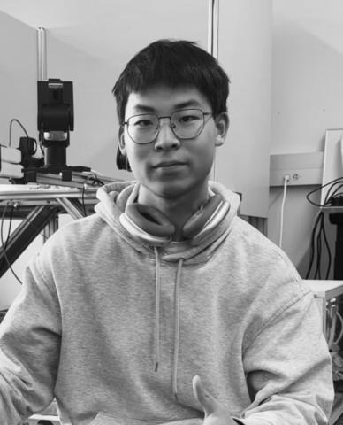
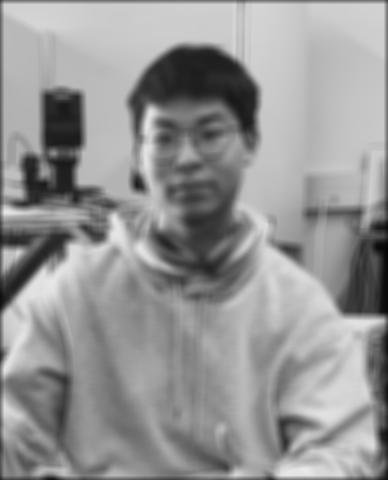

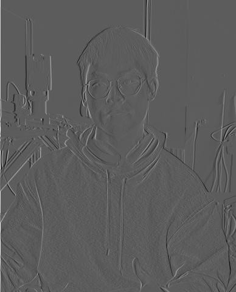
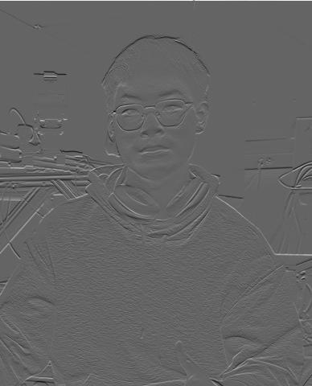
Part 1.2Finite difference operator
I convolved the cameraman image with Dx and Dy to find its
partial derivatives, then combined them to get the gradient magnitude,
√(dx² + dy²). The provided cameraman.png has a thin white
border, so I cropped that out first. Otherwise, the border would show up as a strong
edge even though it isn't really part of the image.
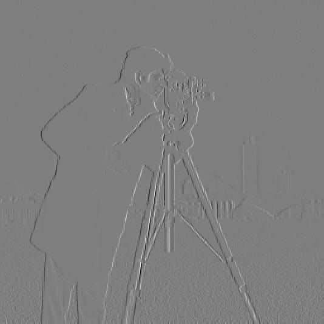
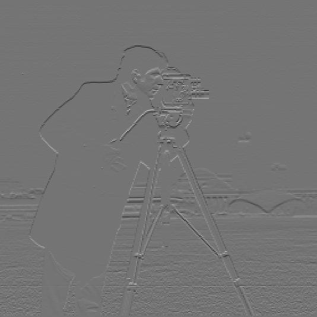
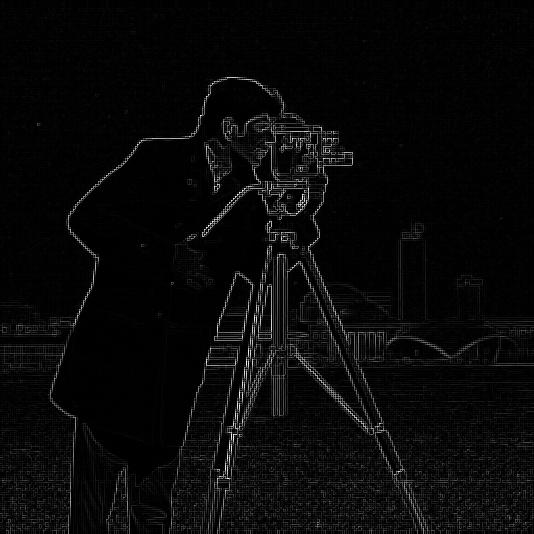
Picking a threshold
To turn the gradient magnitude into a binary edge image, I kept only the pixels above a chosen threshold. I compared four different values:
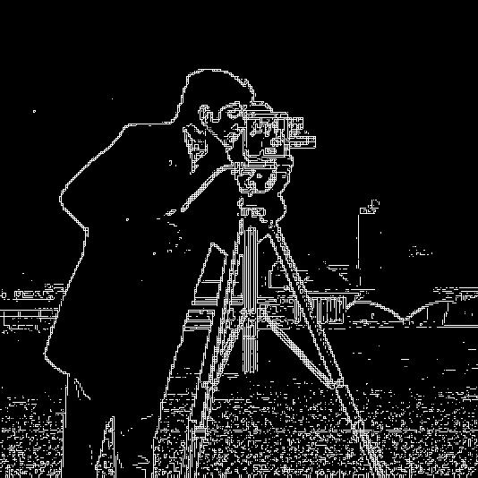
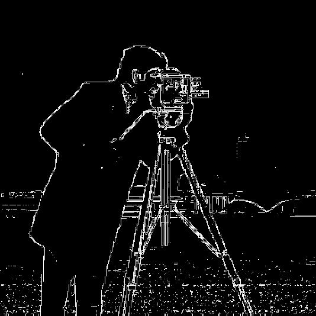
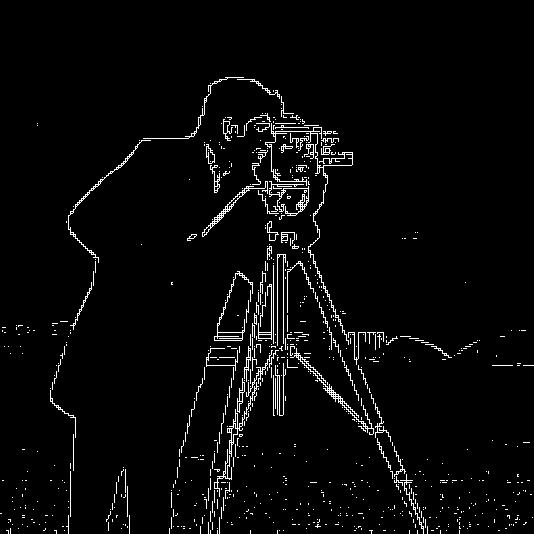
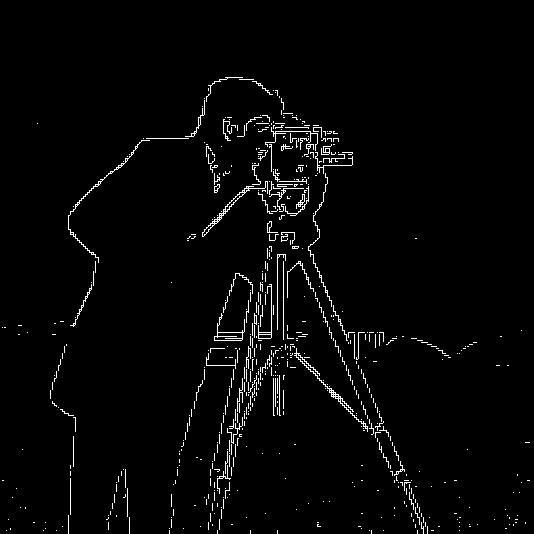
I ended up choosing 0.25. At this threshold, I can still see the cameraman's outline, the camera, the tripod legs, and the buildings in the background, while most of the noisy grass texture disappears. If I raise the threshold any more, thin edges like the tripod legs start to break apart. If I lower it, the grass comes back. I don't think any single threshold can remove the grass completely here because a one-pixel difference responds to every small bit of texture. Smoothing in Part 1.3 helps with that problem.
Part 1.3Derivative of Gaussian
To cut down on the noise, I blurred the image with a Gaussian before taking its
derivatives. I made the 2D Gaussian filter (9×9, σ = 1.5) by taking the outer
product of cv2.getGaussianKernel with itself. After that, I used the same
derivative filters as before.
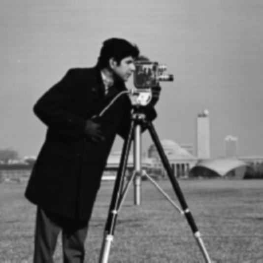
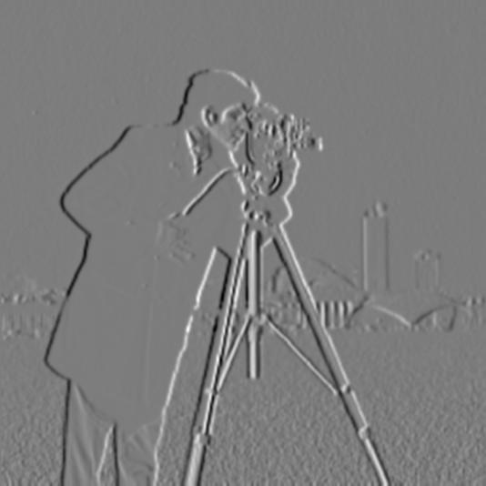
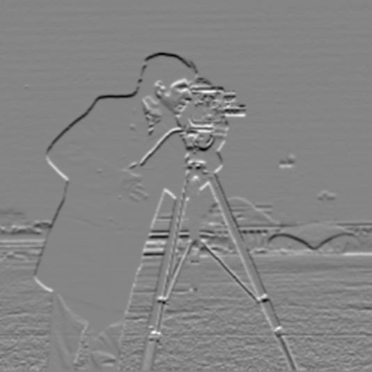

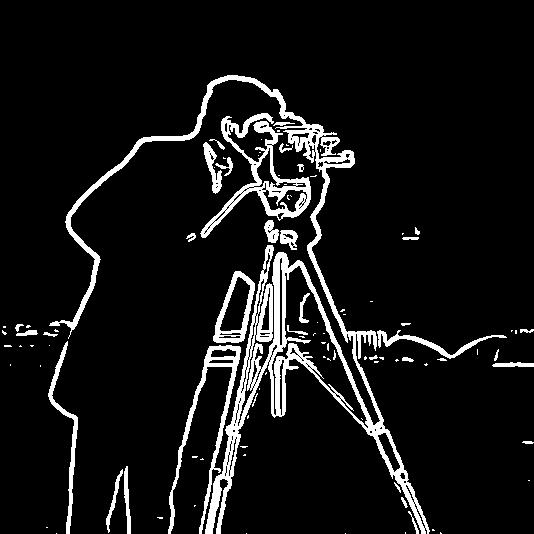
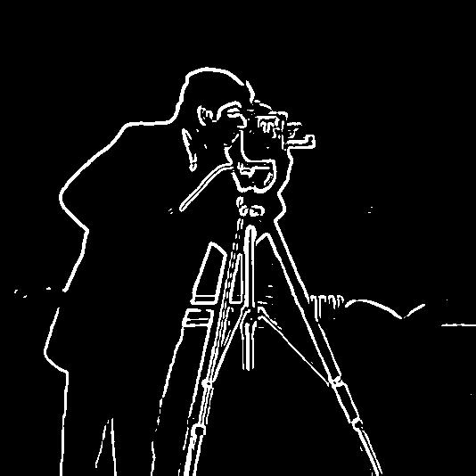
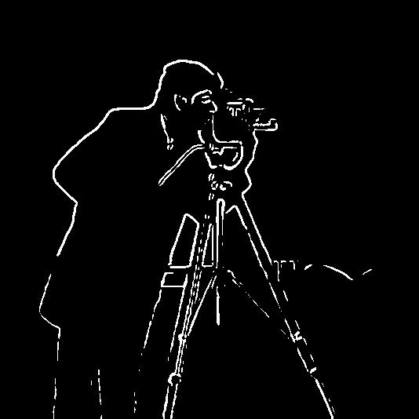
What smoothing changed
- Most of the grass noise is gone. The blur removes small pixel-to-pixel changes in the grass before the derivative filter sees them.
- The edges look thicker, smoother, and more connected. Before smoothing, many of them were thin or broken. Now the cameraman's coat and the tripod legs form much more solid lines.
- The useful threshold dropped from 0.25 to 0.075. Blurring spreads an edge across several pixels, so the gradient at each pixel becomes smaller.
Doing it with one filter
Because convolution is associative, I can blur and differentiate in a single step. I first convolve the Gaussian with Dx and Dy to create two derivative of Gaussian (DoG) filters. Then the image only needs one convolution with each of those filters.
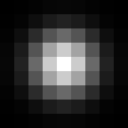
cv2.getGaussianKernel, enlarged.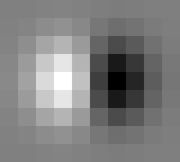
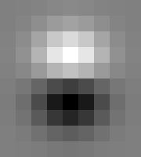
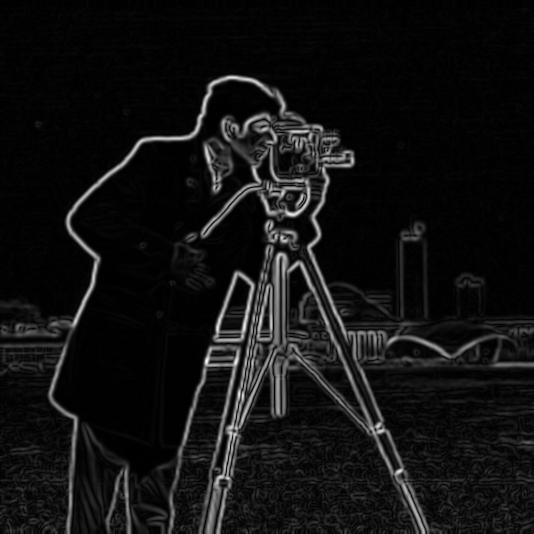
The largest difference between the two approaches is only 7 × 10−16, so aside from floating-point rounding, they produce the same result.
Part 2.1Sharpening
A Gaussian blur is a low-pass filter, meaning it keeps the slow changes in an image while removing the fast ones. Because of that, image − blurred image leaves behind the high frequencies: edges, texture, and other fine details. To sharpen an image, I add a scaled version of those high frequencies back to the original:
sharpened = f + α(f − f ∗ G) = f ∗ ((1 + α)e − αG)
Here, e is the unit impulse, which is just the filter that leaves the image unchanged. This means I can apply the entire unsharp mask with a single convolution using the filter (1 + α)e − αG. I used a 9×9 Gaussian with σ = 2 and applied the filter separately to each color channel.
G = g(9, 2)
e = np.zeros((9, 9))
e[4, 4] = 1
save('p21_' + n + '_' + str(k) + '.jpg', cc(a, (1 + k) * e - k * G))Taj Mahal


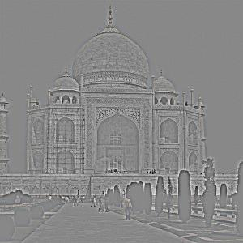
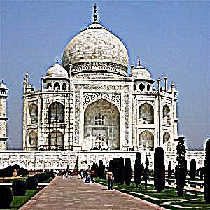
My choice: the fighter-pilot cat
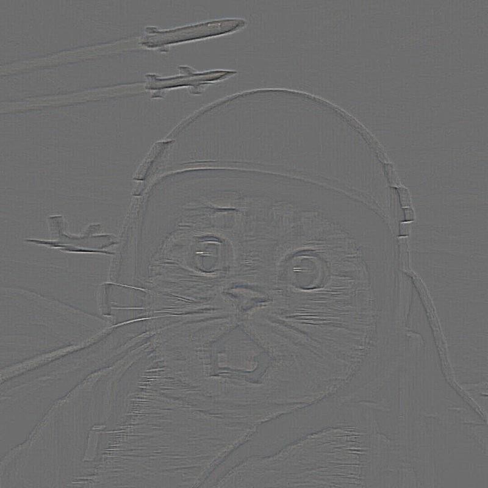
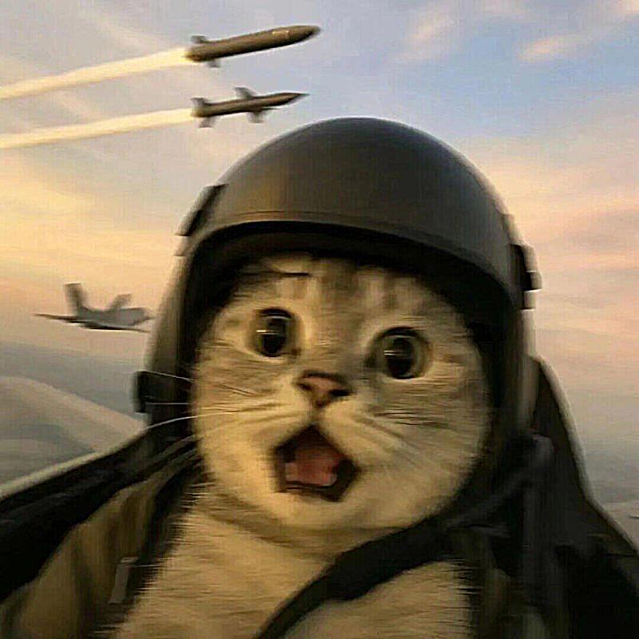
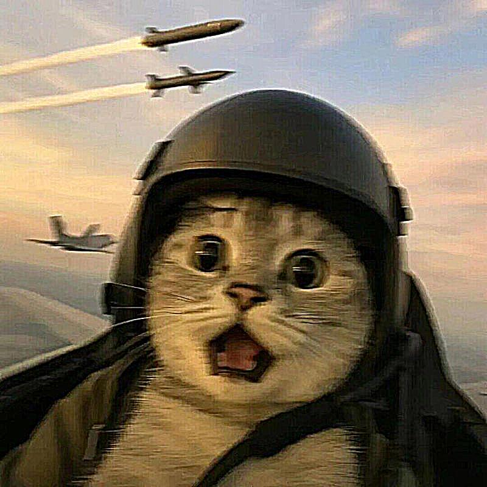
The whiskers and fur look noticeably crisper around α = 1 or 2. At α = 5, the filter also brings out the JPEG block artifacts in this compressed meme image. The filter can't tell useful detail from noise, so it sharpens both.
Blurring, then sharpening
Next, I started with a sharp photo, blurred it, and tried to recover the original look by sharpening it with α = 2.
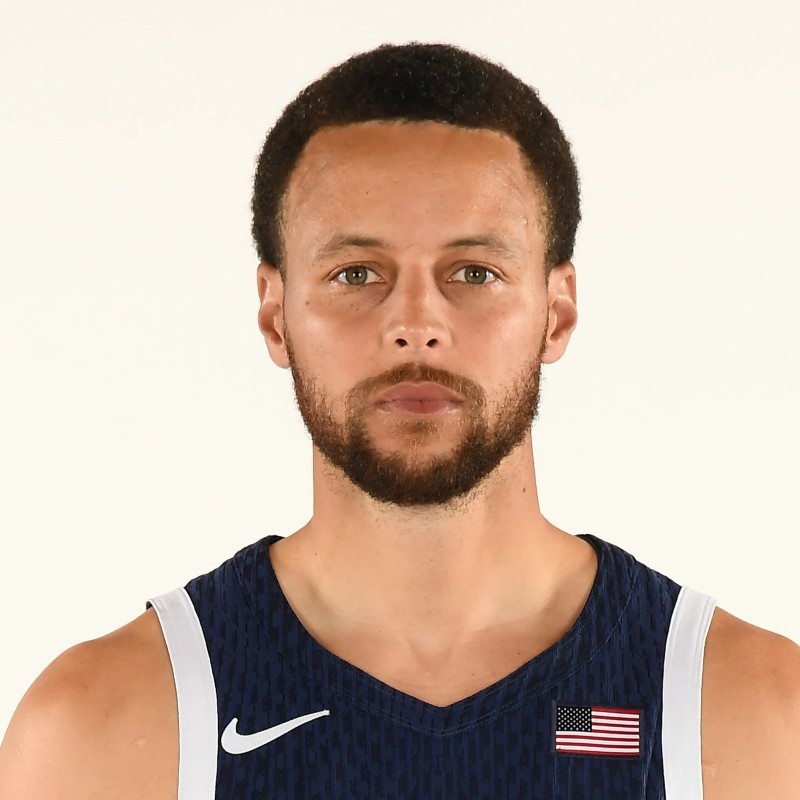
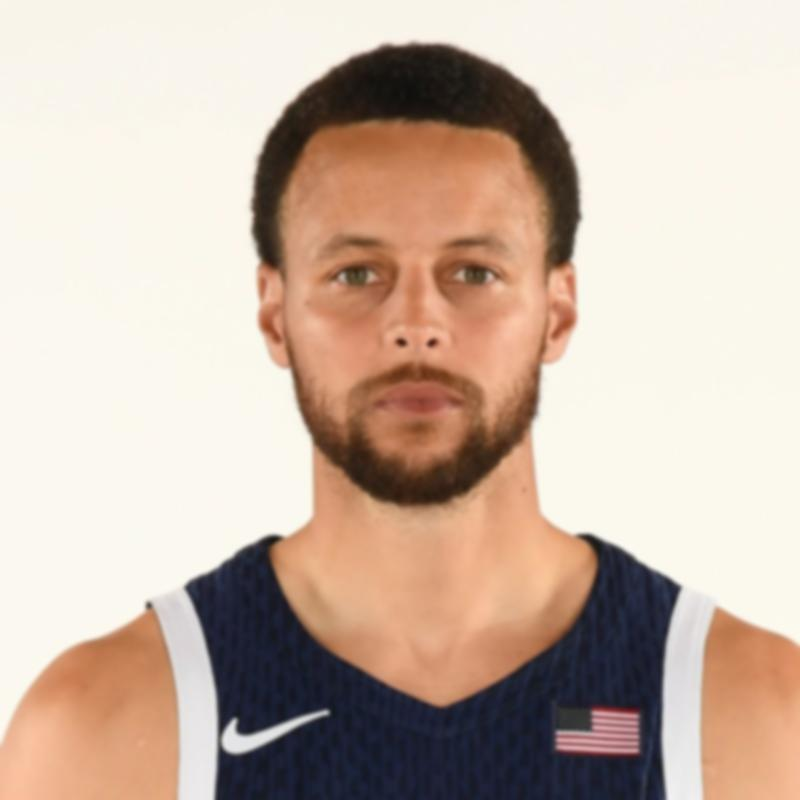
The sharpened result definitely looks crisper than the blurred version. The outlines around the eyes, eyebrows, and beard become visible again, but it's still clearly worse than the original. The blur already removed the fine beard texture and skin detail, and sharpening can only amplify frequencies that are still present. It can strengthen the remaining edges, but it can't recreate information that's gone.
Part 2.2Hybrid images
A hybrid image mixes the low frequencies from one image with the high frequencies from another. When I look at it up close, my eyes notice the fine detail, so the high-frequency image stands out. From farther away, those tiny details become hard to see, leaving the low-frequency image instead.
For each pair, I followed the same process:
- Align the images. I clicked both eyes in each image and used the provided
align_imagesfunction to match their position, scale, and rotation. Then I cropped the result to the area where both images had content. - Low-pass one image with a Gaussian using sigma σ1.
- High-pass the other image by calculating image − Gaussian(σ2), which is equivalent to the impulse minus a Gaussian.
- Add the two filtered images together.
Each hybrid below includes a Close view / Far view toggle. The far view makes the image smaller, which is similar to physically stepping back from the screen.
Favorite: Curry ↔ Goat
Up close, I see Stephen Curry. From farther away, I see a goat.
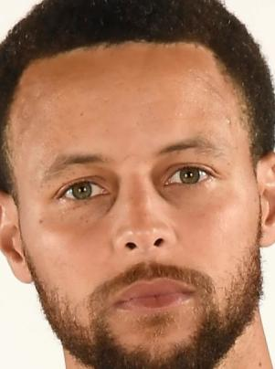
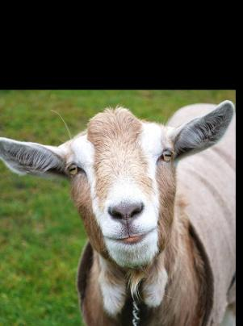
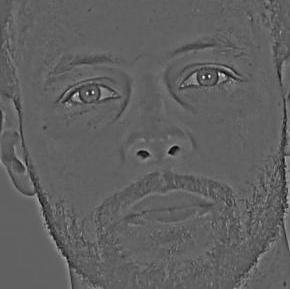
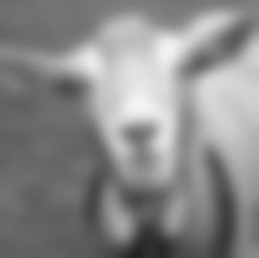
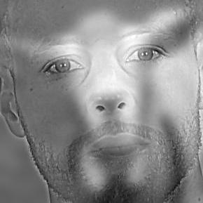
Fourier transforms (log magnitude, calculated with
np.log(np.abs(np.fft.fftshift(np.fft.fft2(img))))):
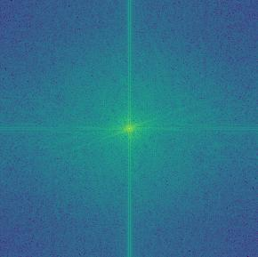
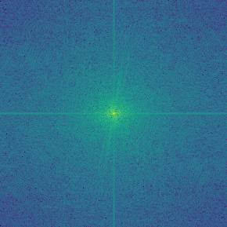
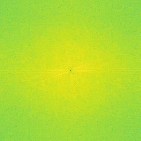
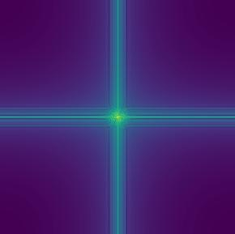
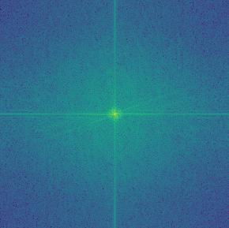
How I chose the cutoffs. A larger σ in the image corresponds to a lower cutoff in frequency. I used σ1 = 8 for the goat so that its fur texture and eye details disappear, leaving only its overall shape and shading. That way, the goat doesn't compete with Curry when I view the image up close. For Curry, I chose σ2 = 3 so that only the finest details—his eyes, eyebrows, and beard texture—remain. Those details fade quickly from a distance. When I placed the two cutoffs too close together, both faces stayed visible at every viewing distance. A larger σ2 also let too much of Curry's face shape through, so he no longer disappeared in the far view.
Derek ↔ Nutmeg
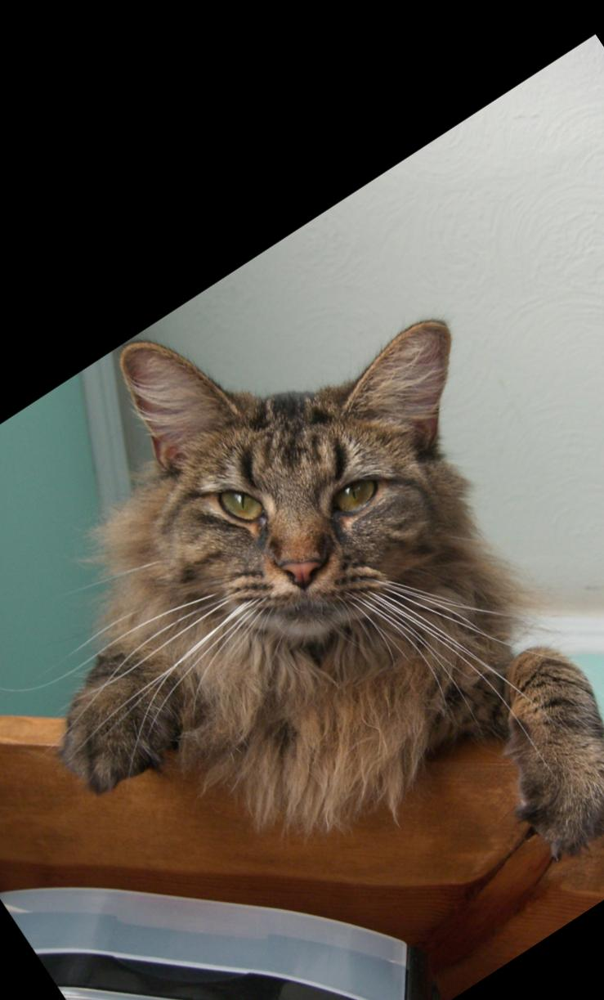
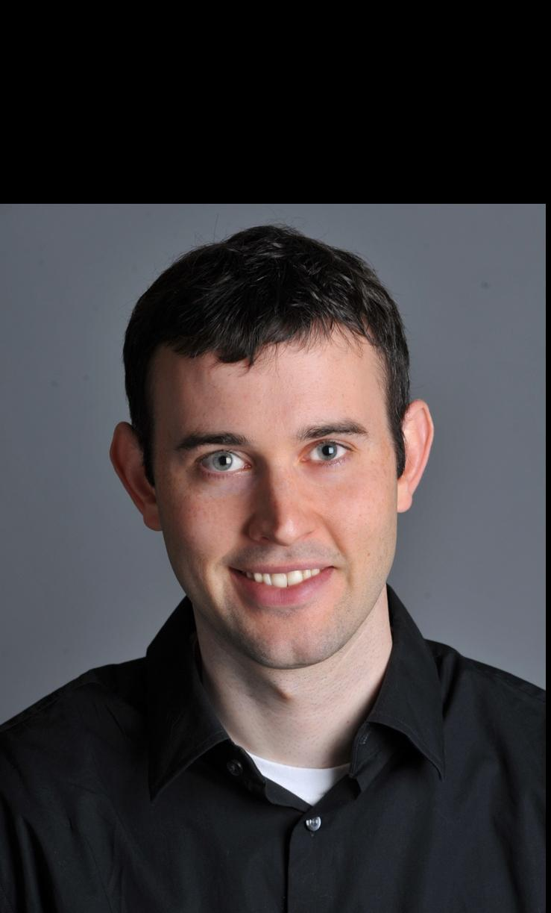
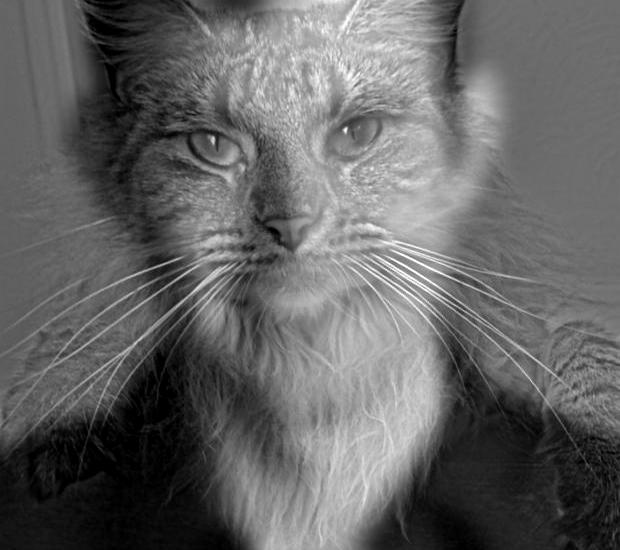
Nutmeg's head is tilted in the original photo, so I passed Nutmeg in as the first image
to align_images. Since the code rotates the first image, this made the
cat's head level while Derek stayed upright.
Natalie Portman, then and now
This pair shows the same person about twenty years apart: present-day Natalie appears up close, while young Natalie as Padmé appears from farther away.
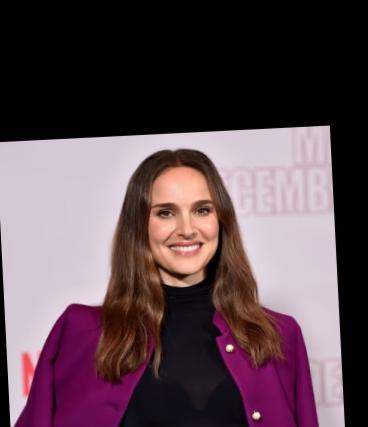
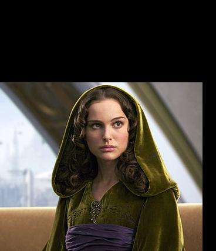
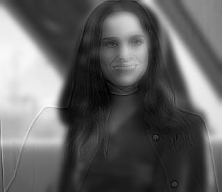
I think this was the hardest pair to balance. Young Natalie's face is darker and has less contrast under the hood, which makes her low-frequency features fairly weak. I had to keep only the very finest details from the present-day image with σ2 = 1 so that it wouldn't overpower the younger face.
Part 2.3Gaussian and Laplacian stacks
A stack works like an image pyramid, except there is no downsampling, so every level keeps the original image size.
- Gaussian stack: Level 0 is the original image. Each new level is more blurred than the last (σ = 1, 2, 4, 8, 16), so it keeps progressively lower frequencies.
- Laplacian stack: Each level is the difference between two neighboring Gaussian levels, so it represents one band of frequencies. The final level is the most blurred Gaussian image. Adding every Laplacian level together reconstructs the original image almost exactly; I measured an error of 1 × 10−16.
def gs(a, n):
g = [a]
for i in range(n):
g.append(blur(g[-1], 2 ** i))
return g
def ls(g):
return [g[i] - g[i + 1] for i in range(len(g) - 1)] + [g[-1]]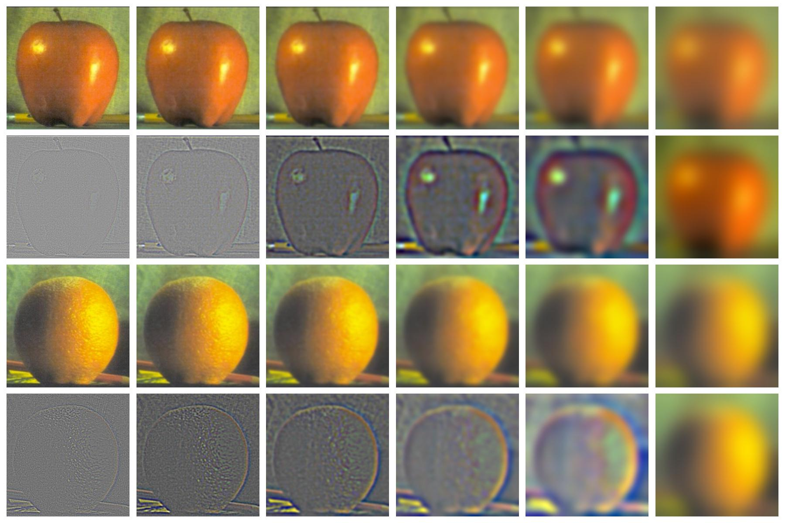
Recreating Szeliski Figure 3.42
For the blend, I also build a Gaussian stack for the mask. At each level, I calculate mask × apple + (1 − mask) × orange, then add all the blended levels together. The mask stays sharp at the fine levels and becomes very soft at the coarse levels. This means the fine details switch from one image to the other within a few pixels, while the larger color changes blend across a much wider area. Together, those transitions hide the seam.
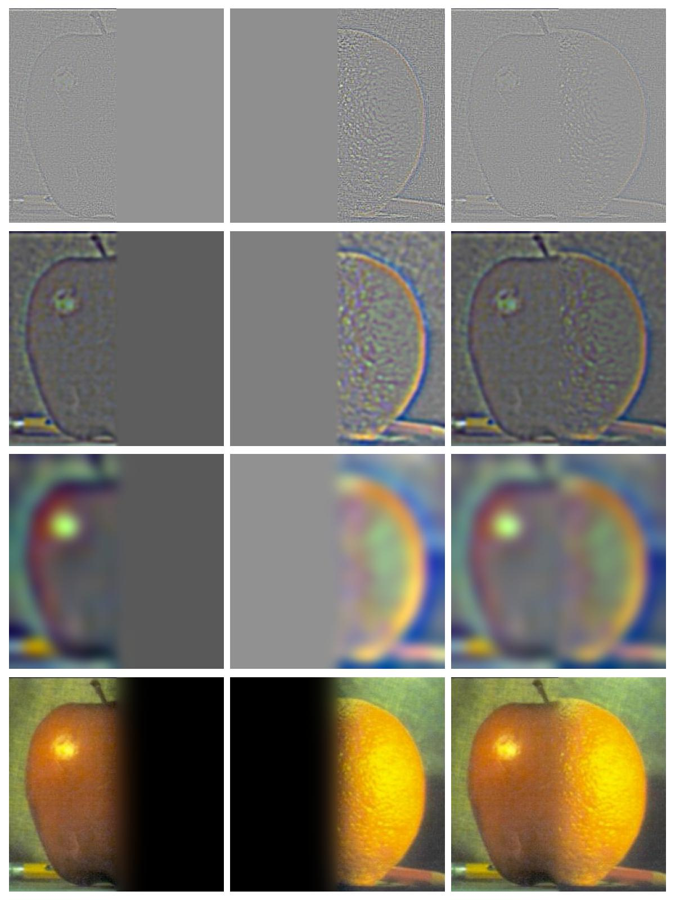
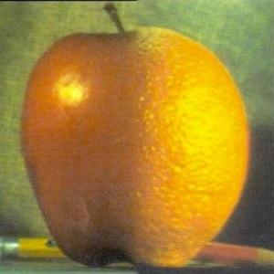
Part 2.4Multiresolution blending
I used the same stack-based method to blend images with irregular masks. For each pair,
I first warped the second photo so that its subject lined up with the correct spot in
the first photo. Then I made an elliptical mask with np.mgrid and blended
across 8 stack levels. With that many levels, the coarsest layers can mix colors over a
very wide area.
Favorite: Tiger Pilot
For this one, I placed a tiger's face inside the fighter-pilot helmet. I lined up the tiger's eyes with the cat's eyes using a similarity transform, which changes only the scale and position.
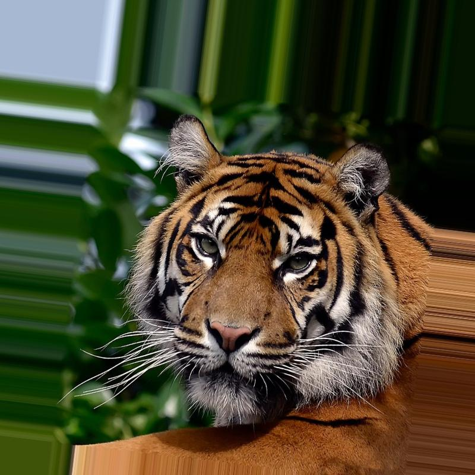
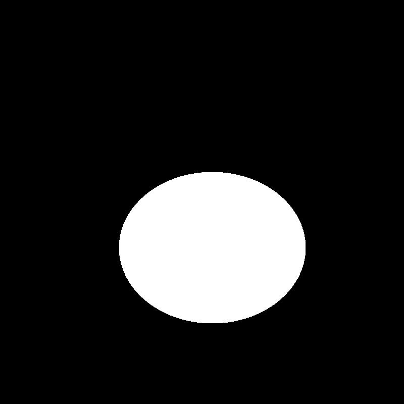
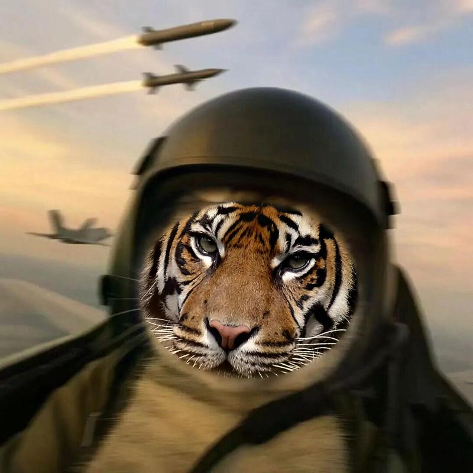
At level 0, the seam is a sharp oval. This lets the tiger's whiskers and stripes stop cleanly at the edge instead of creating ghosted details. By level 4, the seam has turned into a wide, soft blur, so the tiger's orange color slowly fades into the dark helmet. When I add all the levels together, the edge of the face disappears naturally into the helmet's shadow.
Eye of the Storm
For this blend, I placed a human iris inside the eye of Hurricane Isabel, photographed from the International Space Station. The hurricane's eye looks oval because the photo was taken at an angle, so I used an affine transform to stretch the circular iris until it matched.
The clouds around the hurricane's eye fade nicely into the dark outer ring of the iris. I think the final result makes the storm look like it is staring back at you.
Wrapping upWhat I learned
The biggest thing I took away from this project is that shape and fine detail live at different frequencies. A lot of image processing is really about deciding which of those frequencies to keep, remove, or combine. Blurring, sharpening, edge detection, hybrid images, and seamless blending may look like very different tasks, but they all come back to Gaussian filters and subtraction. Hybrid images were probably the most surprising part for me. The exact same pixels can show two different pictures depending on how far away I stand, simply because my eyes start acting like a low-pass filter at a distance.
The tiger image, “Tiger Face,” and the iris image, “Iris Macro, Eye close-up,” are from Flickr under CC BY 2.0. The Hurricane Isabel photo was taken from the International Space Station by NASA and is in the public domain. I found all three through Wikimedia Commons. Derek, Nutmeg, the cameraman, the Taj Mahal, the apple, and the orange came from the CS 180 course materials.
← All CS 180 projects